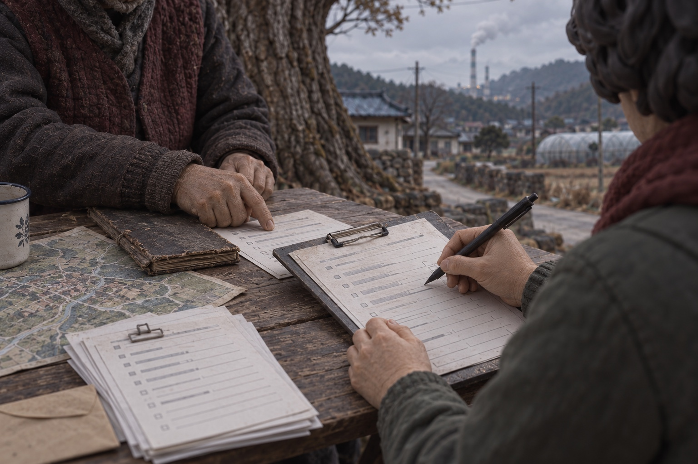
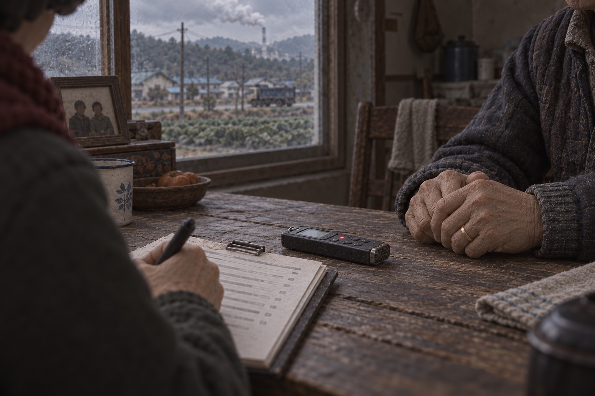
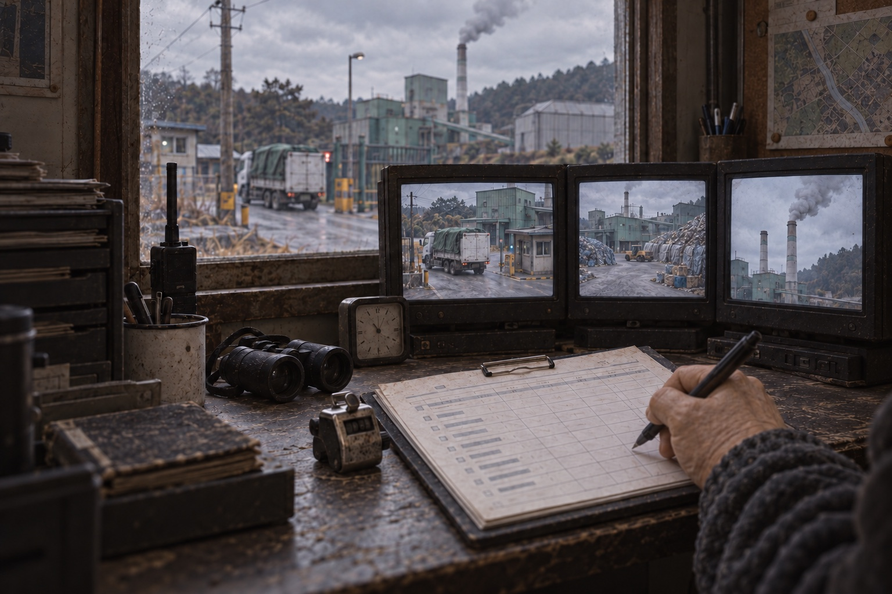
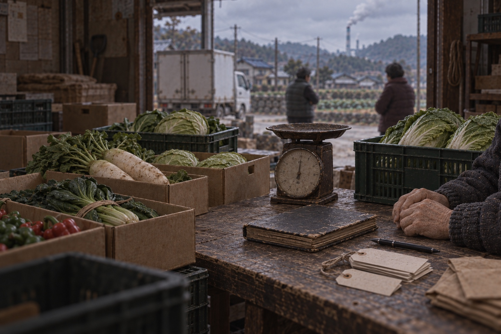

RESIDENT VOICES
청주에서는 주민들이 어떤 기록과 행동을 이어왔을까요?
아래 내용은 실제 보도에 등장한 주민의 조사와 인터뷰입니다.
개인의 경험과 주민 자체조사는 공식 인과관계 판정과 구분해 표시했습니다.
주민 자체조사
실명 인터뷰
주민 감시
인과관계 미확정

01
RESIDENT RESEARCHER
유민채
북이면 추학1리 · 전 이장
주민 자체조사
2018년 북이면 51개 마을 중 19개 마을을 직접 돌며 건강 피해를 조사했습니다.
주민협의체는 암 사망 60명, 그중 폐암 사망 31명으로 집계했다고 밝혔습니다.
주민 측 집계 · 공식 국가통계와 구분
경향신문에서 확인

02
RESIDENT TESTIMONY
이병현
북이면 장양1리 주민
실명 인터뷰
비흡연자인 이병현 씨는 폐암과 췌장암으로 투병했고,
아내는 2019년 급성골수성백혈병으로 사망했다고 증언했습니다.
개인 경험 · 질병 원인의 단독 증거는 아님
농민신문에서 확인

03
RESIDENT MONITOR
김경일
북이면 주민협의체 감시초소원
주민 감시
굴뚝에서 평소와 다른 검은 연기가 보이면 업체에 문의하고,
감시초소에서 반입 차량과 사업장 상황을 확인하고 있습니다.
현재까지 이어지는 주민 직접 감시 활동
MBC충북 보도에서 확인

04
COMMUNITY TESTIMONY
서청석
북이면 주민협의체 대표
공동체의 2차 피해
소각장 피해가 알려진 뒤 ‘암 마을’이라는 낙인이 생기면서
농산물 판매와 주민 관계에도 2차 피해가 생길 수 있다고 설명했습니다.
주민 인터뷰에 담긴 생계·공동체 문제
SBS 취재파일에서 확인
카드가 화면에 들어오면 음성이 재생됩니다.